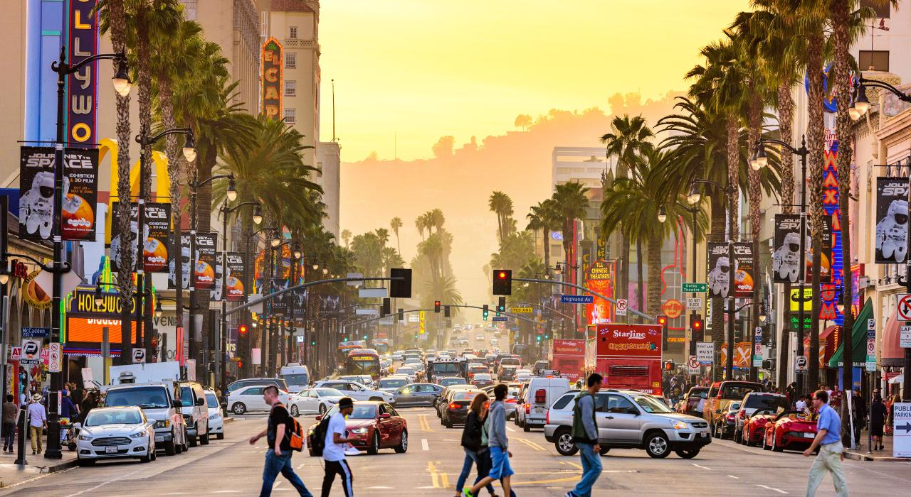
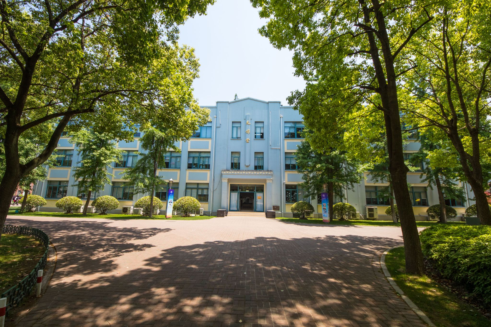
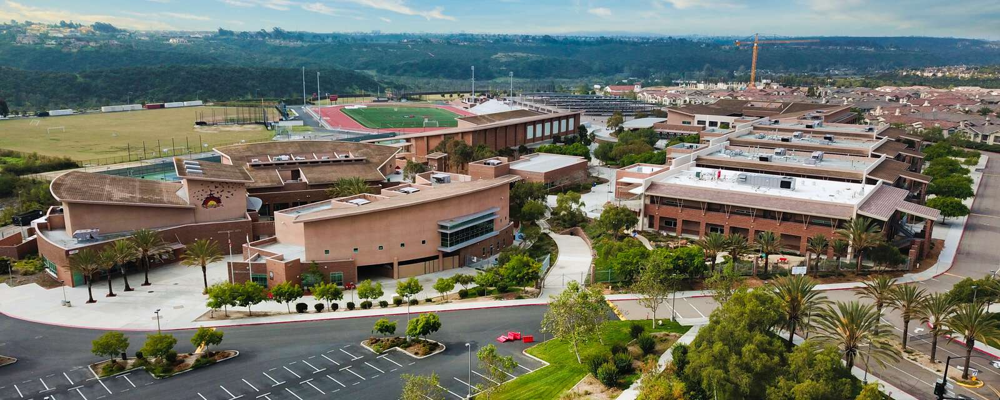

I was born on June 24, 2010, in a hospital in Los Angeles. My early days were a mixture of both American and Chinese culture, since my parents had first let me go to kindergarten in Los Angeles, but then later back in Chengdu and Shanghai after they had changed their jobs and went back to China. I was a bilingual kid, and I guess spending all those years practicing english was the reason my English was better than a lot of other Chinese kids, which I am also proud and grateful of. Though as a small kid, I was a rather lively and active boy, which had indeed caused some problems later on.
I took elementary and middle school in a private school called Shanghai High School International Division. Though its name suggests so, SHSID wasn’t a pure high school, it offered education for students from 1st to 12th grade and 8 years of my life had been spent there. Every time I think of my past, school felt like a second life for me, it was where that really shaped how I am today, maybe even more than my own parents. I still went to America often, though not for school, but basically every time during summer break, my parents would bring me to LA and take summer school there. I was still a lively and "clumsy" kid, constantly getting into trouble here and there, and I guessed I had learned from my mistakes, because I wasn’t the 8 year old kid that would chase people around and fight other boys just because I was bored anymore.
In the last year of middle school, I left China and came back to America, finishing middle school in Pacific Trails Middle School, which is right next to Canyon Crest Academy, which I am now in. High School has been tough for me, meeting new people, tough courses, and sleep deprivation has left me tired and unable to concentrate. I have been trying to improve my sleep schedule from 4 hours a day to at least 6 hours, and it’s been kinda working. And I guess all these new AP classes and college had caused me to be stressed out too, I had never thought college would be so close. This is a direct result of the problems I had mentioned in the first paragraph, while other students had been studying, playing sports, practicing instruments, I had been playing, naively, and had wasted my time; my parents, who were busy from work, had no time to tend to my education, and my stupid rejection to everything academic had lead me to becoming extremely stressed in high school, but all I can do is just sigh and hope everything will turn out good. For some finishing words, my current favorite song is Jay Chou’s “Flower Sea”, current favorite video game is Clash of Clans, and favorite movie I’ve watched this year was F1.